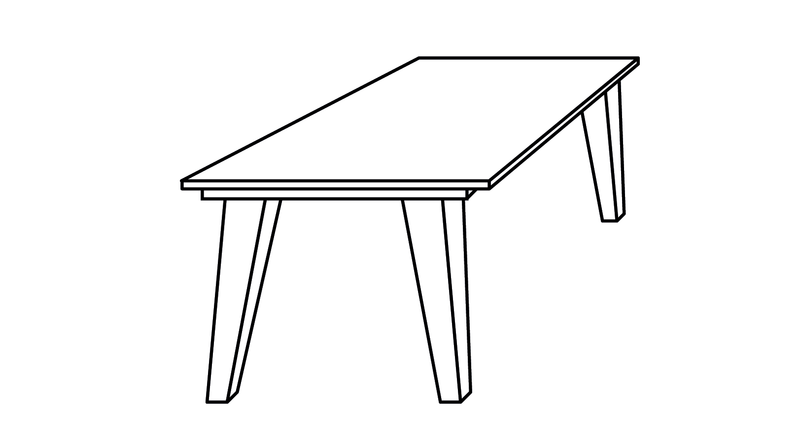
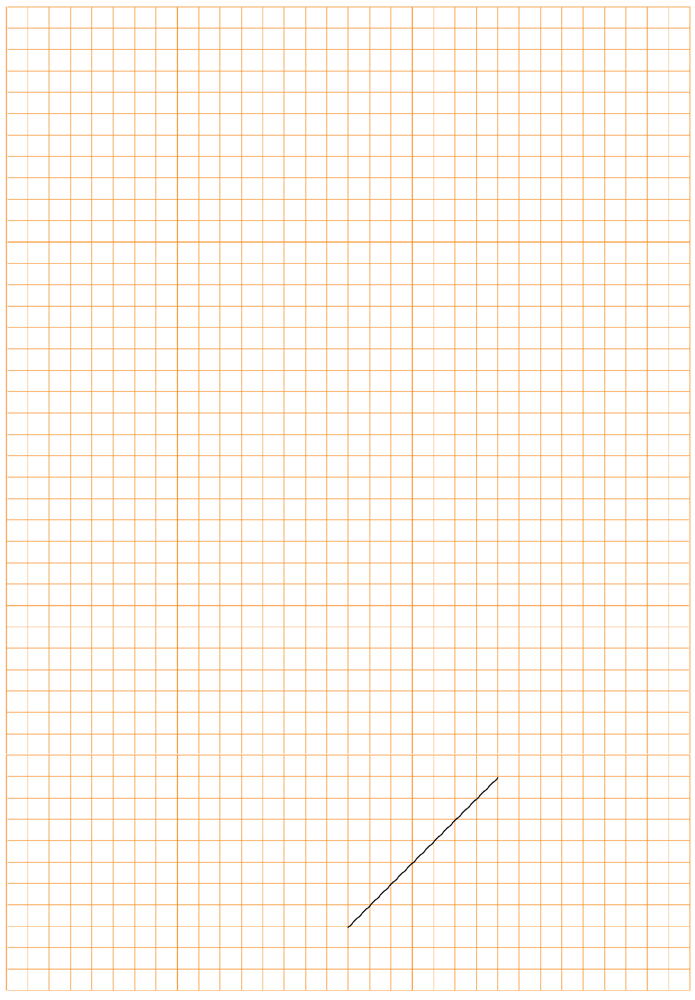
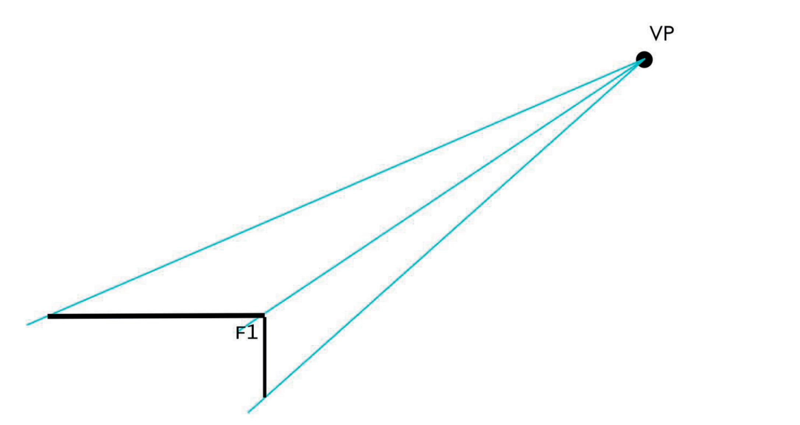
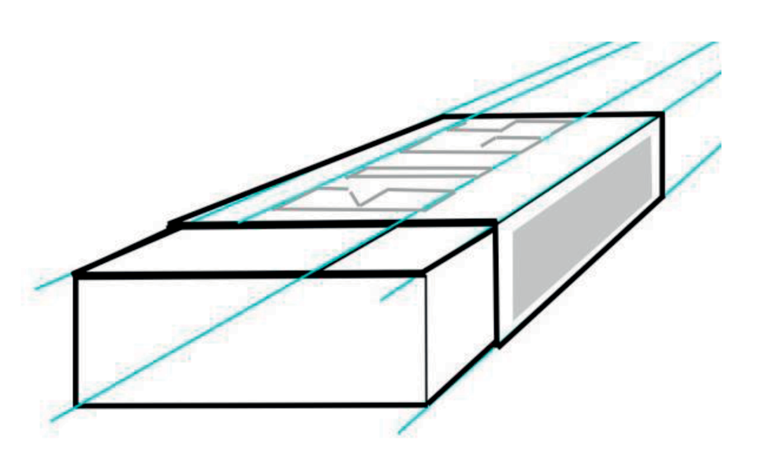
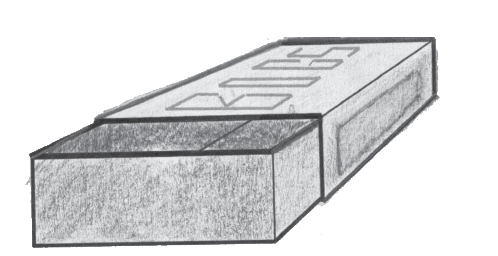

In hierdie hoofstuk gaan jy leer om twee tipes tekeninge te maak. Tekeninge help ons om vir ander mense te wys hoe ons idees lyk. Tekeninge help ons ook om ons idees te beoordeel, om van probleme bewus te word en om oplossings te ontwikkel.
Figuur 1
Figuur 2
Tekening A
Figuur 3

Tekening B
Twee tipes tekeninge
Kyk weer na tekeninge A en B. Sien jy tekeninge van twee verskillende tafels, o twee verskillende tekeninge van dieselfde tafel? Dink mooi voor jy antwoord.
Kyk na tekening A en tekening B op die vorige bladsy. Kyk ook na tekening C en tekening D op die volgende bladsy. Watter een van die twee tekeninge op die volgende bladsy is dieselfde as tekening A, behalwe dat dit kleiner is? Verduidelik hoekom jy so sê.
Hoe verskil tekeninge C en D van mekaar?
Figuur 4
’n Perspektieftekening (Tekening C)
Figuur 5
’n 3D skuinstekening (Tekening D)
Tekeninge soos dié in Figuur 4 (tekening C) word perspektieftekeninge genoem, of 3D artistieke tekeninge. In ’n perspektieftekening probeer die kunstenaar wys wat jy werklik sien. Jy kan nie van ’n perspektieftekening akkurate afmetings maak nie.
Tekeninge soos dié in Figuur 5 (tekening D) word 3D skuinstekeninge genoem. Hulle lyk anders as dit wat jy in werklikheid sien as jy na die voorwerp kyk. Afmetings kan van 3D skuinstekeninge geneem word.
In die volgende les gaan jy ’n paar 3D skuinstekeninge maak.
3D skuinstekeninge
Maak ’n 3D skuins projeksie tekening
Figuur 6
Wanneer jy die instruksies hieronder volg, sal ’n goeie 3D skuinsskets van ’n stoof maak.
Dit is makliker as jy eers ’n gidsraam teken wat die vorm van die stoof wys. Doen dit op die volgende bladsy. Moenie ’n liniaal gebruik nie.
Om ’n gidsraam te teken, teken eers reghoek om die kas se voorkant te wys, soos in stap 1 hieronder. Teken die reghoek links onder op die bladsy.
Teken nog ’n reghoek van dieselfde grootte soos wat in stap 2 hieronder gewys word. Trek dan skuins lyne, soos in stap 3, om die kante van die gidsraam wat van die voorkant na die agterkant gaan aan te dui.
Figuur 7a
Figuur 7b
Figuur 7c
Die woord skets word dikwels gebruik vir ’n tekening wat sonder ’n liniaal of ander tekeninstrumente gemaak is.
In plaas daarvan om “skets” te sê kan jy ook vryhandtekening sê.
Maak jou 3D skuinsskets op hierdie bladsy. Teken die skets groot.
Verander jou gidsraam in ’n stoof
Figuur 8
Kyk nou of jy jou gidsraam in ’n stoof kan verander. Hier is ’n paar wenke:
Die stoofplate bo-op die stoof is sirkels. Op tekeninge soos hierdie sal hulle plat gedrukte sirkels (ellipse) wees.
Die sirkels van die knoppe is regte sirkels. Dit is omdat alles op die voorste sy van die tekening dieselfde is as in die werklike lewe.
Kyk hoe die handvatsel geteken is. Dit kom uit die vooraansig uit. Om dit te doen, gebruik skuins lyne wat vorentoe kom.
Maak alle lyne wat jy op die voorwerpe kan sien dik.
Iets om tuis te doen
Dit is makliker om 3D tekeninge op geruite papier papier te maak, soos die voorbeeld op die volgende bladsy. Maak ’n beter tekening van die stoof op die geruite papier. Een van die skuins lyne is reeds getrek.

Akkurate 3D skuinstekening
Die tekening hieronder is ’n akkurate skuinstekening van die stoof.
Skryf die lengte, hoogte en breedte van hierdie stoof neer.
Meet nou die lengte, hoogte en breedte op die tekening met ’n liniaal.
Wat sien jy raak met betrekking tot die breedtelyn? Is dit op dieselfde skaal geteken as die lengte- en hoogtelyn?
Gebruik die geruite blok op die vorige bladsy om ’n akkurate skuinstekening van die stoof op ’n skaal van 1:5 te maak.
’n Paar belangrike dinge oor skuinstekeninge
Vir die vooraansig van n skuinstekening is ons afmetings presies soos die skaal sê. Daarom, as die lengte van die voorwerp 600 mm is en die skaal is 1:10, sal jy die lengte 60 cm (600 mm) teken. Maar, in die rigting wat die skuins breedte wys, moet jy die ware skaalafmeting halveer. As die breedte dus 565 mm, en die skaal 1:10 is, moet jy die
Figuur 10
By 3D skuinstekeninge is die konstruksielyne parallel, soos hierbo gewys..
Perspektieftekeninge
As jy iets ver weg sien, lyk dit klein. As jy naby ’n voorwerp is, lyk dit groot.
Figuur 11
’n 3D tekening wat wys dat dinge op ’n afstand kleiner word, word ’n perspektieftekening genoem. Kyk na hierdie tekening van ’n heining. Dit is geteken om tot in die verte aan te gaan.
Figuur 12
Gebruik die stappe hieronder om hierdie heining op die volgende bladsy te teken
Begin in die onderste hoek aan die linkerkant van jou bladsy en teken ’n heiningpaal. Dit sal die langste paal wees want dit is die naaste aan jou.
Teken ’n punt in die boonste hoek aan die regterkant van die bladsy. Hierdie punt word die verdwynpunt (VP) genoem. Dit verteenwoordig ’n punt so ver weg dat jy nie meer kan sien hoe hoog iets is nie.
Teken ’n dun gidslyn van die bopunt van die voorste paal tot by die verdwynpunt (VP). Jy kan ’n liniaal hiervoor gebruik.
Trek nog ’n dun gidslyn van die onderpunt van die voorste paal tot by die verdwynpunt.
Teken ’n tweede paal agter die eerste een. Die onderste end van hierdie paal moet by die onderste gidslyn begin en die paal hou op by die boonste gidslyn.
Hou aan om nog pale te teken terwyl jy in die rigting van die verdwynpunt beweeg.
Onthou dat die pale sal lyk of hulle nader en nader aan mekaar staan.
Voeg nou ’n paar kruislyne by om die heiningdraad voor te stel.
Maak jou buitelyne dik en teken beskaduwing om jou heiningpale mooi te laat lyk.
Teken die heining op hierdie bladsy.
Teken ’n vuurhoutjiedosie in perspektief
Teken ’n reghoek om die voorkant van die vuurhoutjiedosie voor te stel in die onderste hoek aan die linkerkant van hierdie bladsy. ’n Deel van die reghoek is reeds vir jou geteken. Teken ’n dun gidslyn uit elke hoek van die reghoek na die verdwynpunt. Jy mag ’n liniaal gebruik.
Figuur 13
Beweeg van die verdwynpunt af weg op die gidslyn en merk ’n punt (B1) af, wat die breedte van die vuurhoutjiedosie reg laat lyk.
Trek van hierdie punt (B1) ’n vertikale lyn na die onderste gidslyn. Dit is die rand van die agterkant van die vuurhoutjiedosie.
Trek vanaf dieselfde punt (B1) ’n horisontale lyn na die gidslyn aan die linkerkant. Dit sal die borand van die vuurhoutjiedosie se rugkant voorstel.
Figuur 14

Perspektieftekening met tekstuur en beskaduwing
Kyk na die oop vuurhoutjiedosie regs. Dik en dun lyne word gebruik om die kante te laat uitstaan. Probeer dit op die vuurhoutjiedosie wat jy reeds geteken het, of op ’n nuwe tekening.
Figuur 15
Gebruik enkel verdwynpunt perspektief en teken ’n oop vuurhoutjiedosie in die spasie hieronder.
Voeg meer beskaduwing en selfs kleur by
Wanneer ’n oppervlak plat is, lyk die hele oppervlak of dit dieselfde kleur het. Maar, afhangend van waar die lig vandaan kom, lyk party oppervlakke donkerder as ander.
Figuur 16
Om beskaduwing te gebruik om ’n gidsraam 3D te laat lyk, teken ’n nuwe gidsraam op die volgende bladsy en doen die volgende:
Kleur die oppervlakke aan die voorkant, die bokant en sye liggies in met een kleur. Jy kan ’n potlood of kleurpotlood gebruik.
Kies die oppervlak wat die tweede donkerste sal wees. Kleur hierdie oppervlak ’n tweede keer in.
Kies die aansig wat die donkerste sal wees. As die lig agter die tekening is, sal dit die vooraansig wees. Kleur hierdie oppervlak nog twee keer liggies in. Die donkerste aansig sal dus drie keer ingekleur wees.
Volgende week
Volgende week sal jy oor meganiese stelsels leer. Jy sal sien hoe hefbome werk om dit makliker te maak om voorwerpe te beweeg.